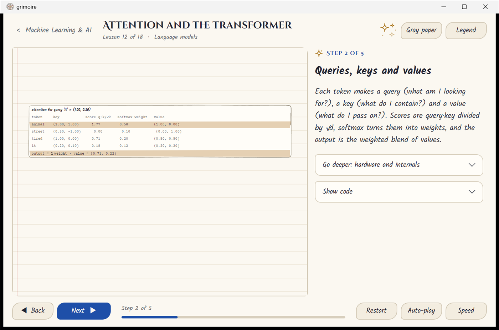
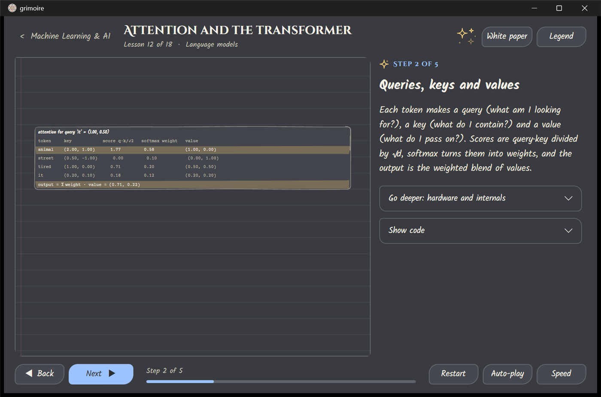
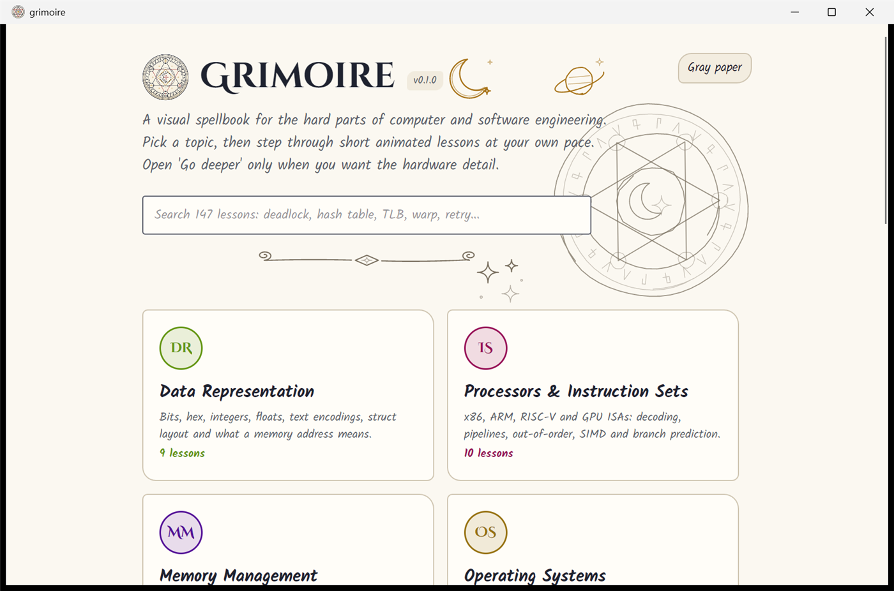
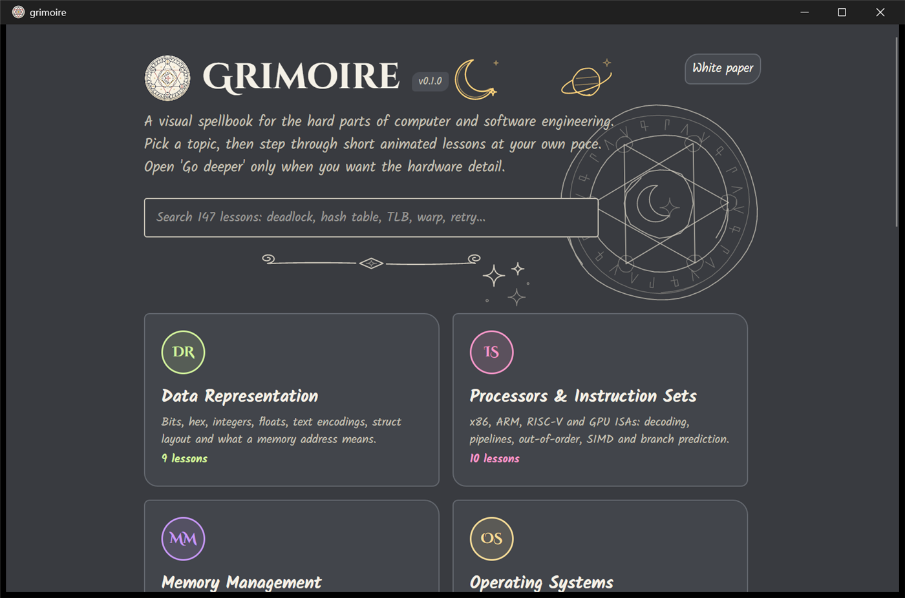
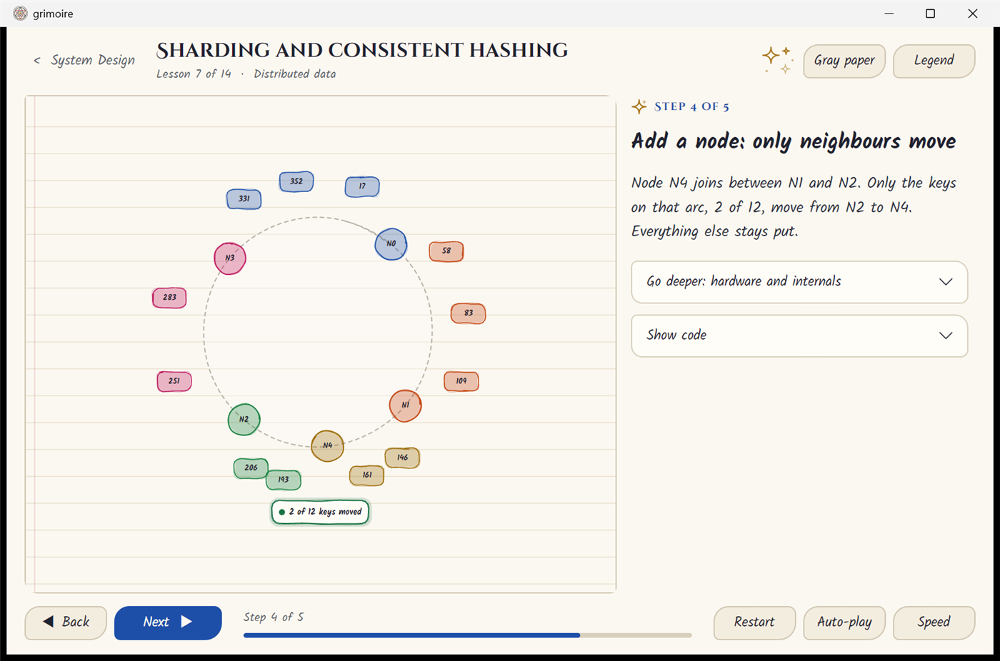
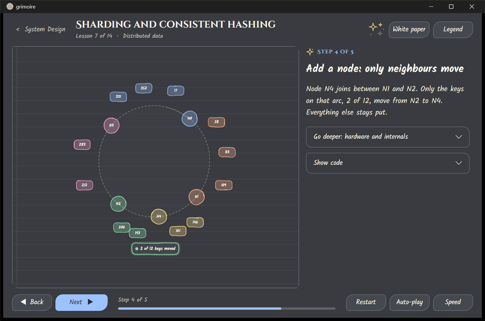

See how computers really work, one animated step at a time.
grimoire is a free, open-source desktop knowledge base for the hard parts of computer and software engineering: deadlocks, page tables, warps, TCP, B-trees, Raft, transformers and much more. Every lesson is a short animation you step through at your own pace, with the hardware detail and real code one click away.


How a lesson works
Each lesson is a short story of steps (most have 4 to 8). The picture animates as you move forward: threads grab locks, packets cross the wire, keys move around a hash ring, values flow through a neural network.
Step through it
Press → to advance. Shapes slide, flash and fade so you can see exactly what changed, and why.
Go deeper when you want
A short narrative explains each step. Open "Go deeper" for the hardware and internals: cache lines, TLBs, HBM, PCIe lanes.
Read the real code
"Show code" highlights the exact lines each step is about, in C#, SQL, CUDA, assembly or pseudo-code.
Run real demos
The 18 concurrency lessons ship with runnable scenarios: watch an actual deadlock happen and a watchdog detect it.
Computed, not drawn
Gradient descent, k-means, convolutions, attention weights, Raft votes and grid-world values are calculated live by the real algorithm.
Find anything
Search every lesson by keyword (deadlock, TLB, warp, QUIC, saga, attention...) and jump straight in.




Every lesson
From bits and instruction sets up to distributed systems and frontier AI models. Click a track to see its lessons, or search across all of them.
Download and run (Windows x64)
- Open the latest release.
- Download
grimoire-vX.Y.Z-win-x64.zip(and the.sha256file if you want to verify it). - Unzip anywhere and run
grimoire.exe. No installer and no .NET install needed: it is a self-contained single file.
Windows SmartScreen may warn about an unsigned app; choose "More info" then "Run anyway".
Keyboard
| → / PgDn | next step |
| ← / PgUp | previous step |
| Space | auto-play / pause |
| Home | restart the lesson |
| Esc | back to the track or home |
Build from source
Requires the .NET 10 SDK. Runs on Windows, macOS and Linux.
git clone https://github.com/arteficent/grimoire.git cd grimoire dotnet run --project grimoire dotnet test grimoire.slnx # curriculum consistency tests
Built with
Lessons are plain C#: a StoryBuilder describes each step as a change to a scene of boxes, circles, tables and arrows, and the renderer animates the difference. Contributions of new lessons are welcome.